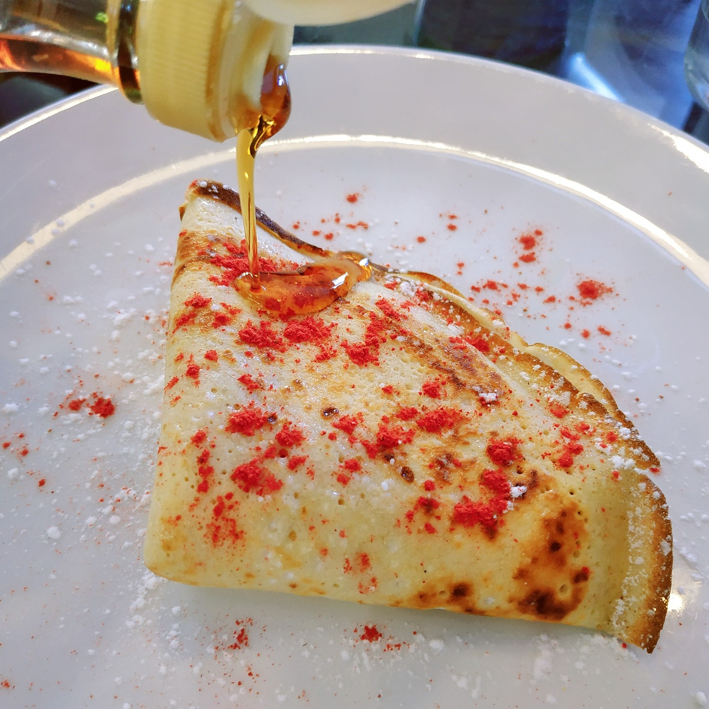
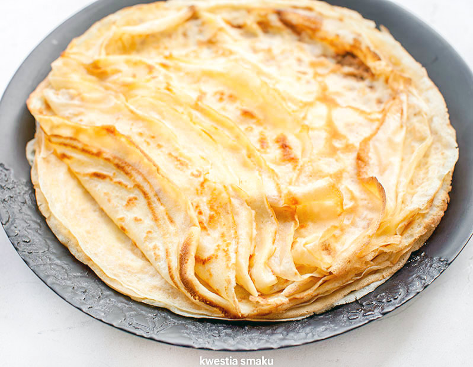

Naleśniki.
Składniki
- 1 szklanka mąki pszennej
- 2 jajka
- 1 szklanka mleka
- 3/4 szklanki wody (najlepiej gazowanej)
- szczypta soli
- 3 łyżki masła lub oleju roślinnego
Mąkę wsypać do miski, dodać jajka, mleko, wodę i sól. Zmiksować na gładkie ciasto. Dodać roztopione masło lub olej roślinny i razem zmiksować (lub wykorzystać tłuszcz do smarowania patelni przed smażeniem każdego naleśnika).
Naleśniki smażyć na dobrze rozgrzanej patelni z cienkim dnem np. naleśnikowej. Przewrócić na drugą stronę gdy spód naleśnika będzie już ładnie zrumieniony i ścięty.
|  |
 |
| fot. Naleśnik z twarogiem i syropem klonowym |
fot. Naleśniki |
Źródła: http://mojehobbi.pl/gotowanie-dla-niektorych-to-prawdziwe-hobby-i-pasja/ https://www.winiary.pl/przepisy/barszcz-czerwony-czysty/?gclsrc=aw.ds&gclid=Cj0KCQjw1PSDBhDbARIsAPeTqrdDU-gjsfgpPJQPGuhcGblDDzk9Eyl5sSXYBeuPDDCVKREI3yu6m3waAv79EALw_wcB&gclsrc=aw.ds https://www.kwestiasmaku.com/przepisy/salatki-z-kurczakiem https://www.marta-gotuje.pl/mac-and-cheese-przepis/ https://stylzycia.radiozet.pl/Kuchnia/Kurczak-curry-z-ryzem-sprawdzony-przepis-24135 https://www.kwestiasmaku.com/kuchnia_polska/nalesniki/nalesniki.html http://rpo-przemyska.pl/gotowaniee.html https://michalwrzosek.pl/przepisy/kurczak-w-kremowym-sosie-curry/